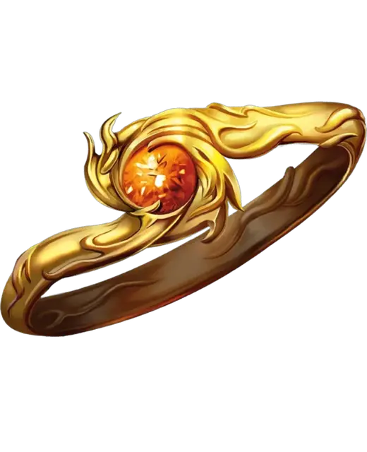

Кольцо сопротивления
Ring of Resistance
Кольцо, редкое

Рекомендованная стоимость 4 000 ЗМ
Пока вы носите кольцо, вы обладаете Сопротивлением одному из типов урона. Самоцвет в кольце соответствует этому типу урона; Мастер выбирает тип урона или определяет броском по следующей таблице.
| 1к10 | Тип урона | Самоцвет |
| 1 | Звук | Шпинель |
| 2 | Излучение | Топаз |
| 3 | Кислота | Жемчужина |
| 4 | Некротический | Гагат |
| 5 | Огонь | Гранат |
| 6 | Психический | Нефрит |
| 7 | Силовой | Сапфир |
| 8 | Холод | Турмалин |
| 9 | Электричество | Цитрин |
| 10 | Яд | Аметист |